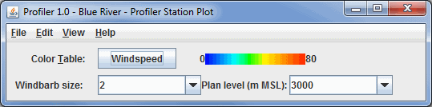

Overview
The Profiler Station Plot display shows winds at one level above one or more
stations on the Main Display Window. Winds are shown with the wind barb symbol.

Image 1: 2D Multi-station Control
Properties
- Color Table - Shows the active color table and the associated
high and low data values in the units the display is made in. As the mouse
pointer is moved over the color bar, the value at a particular color is
shown. Right click on the color bar or click on the button that displays the name of the Color Table to make modifications to the color bar. This allows you to open the Color
Table Editor, change the range, select other color tables, etc.
- Windbarb size - Enlarge or
reduces the size of the wind barbs.
- Plan level - Changes the level
above mean sea level where the wind barbs are plotted.
Menus
All of the menu items seen utilizing this display are standard options that can be found in the Menus section of the Layer Controls Overview page.